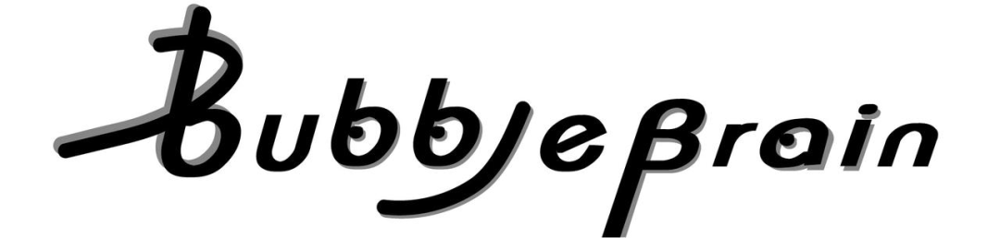
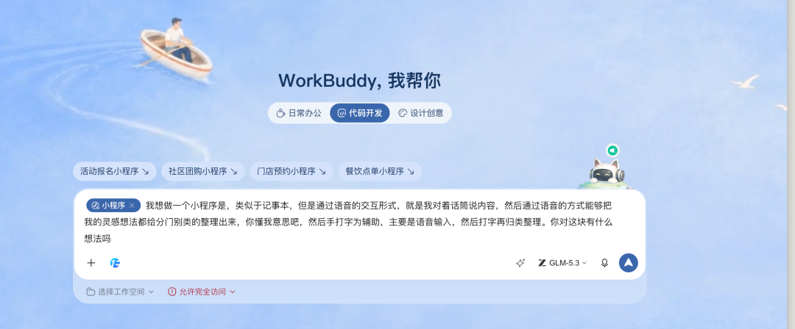
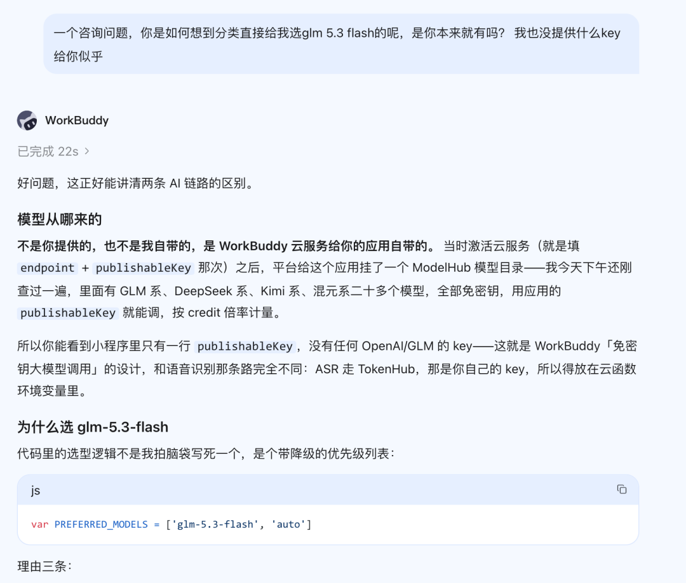
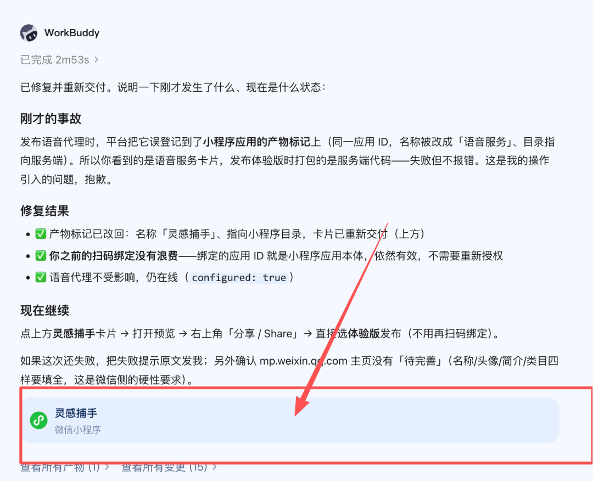
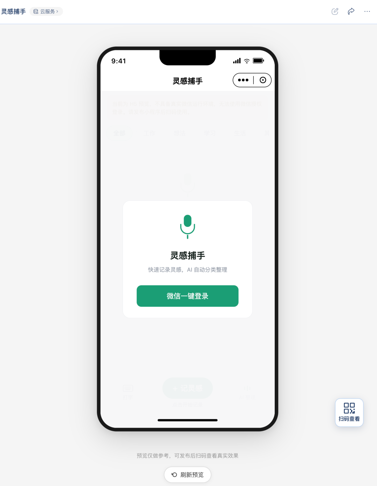
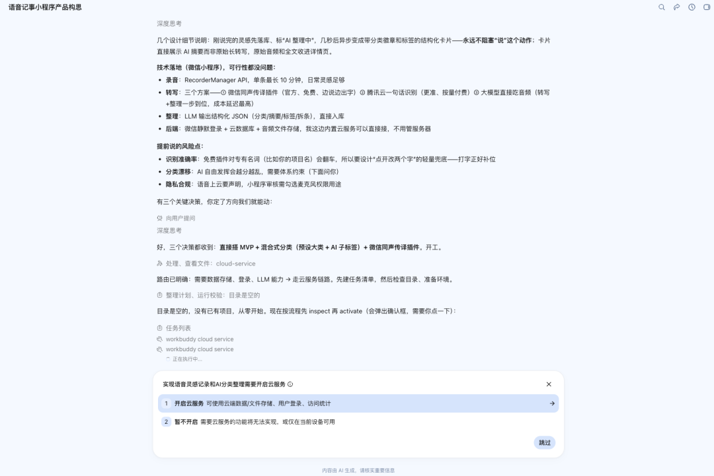
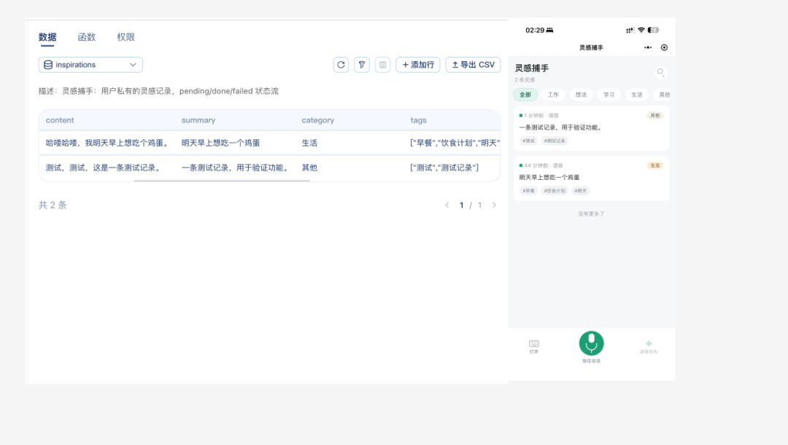
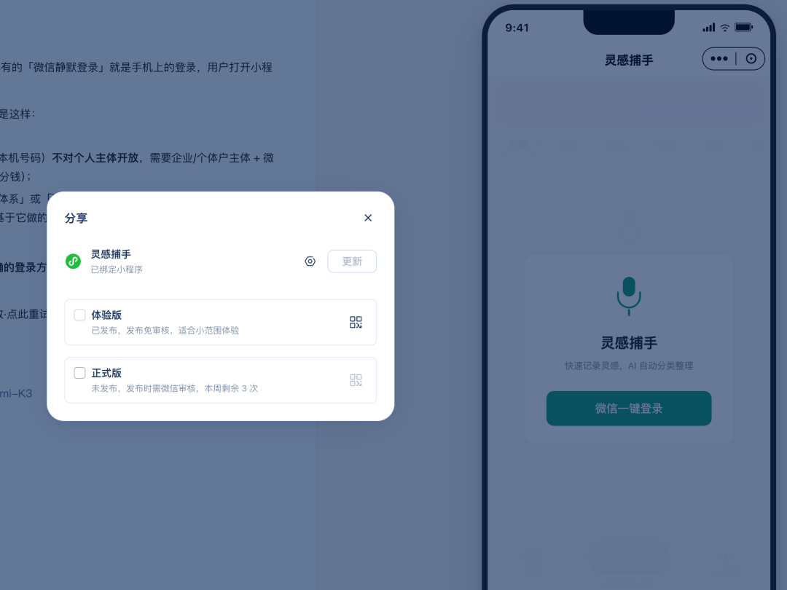
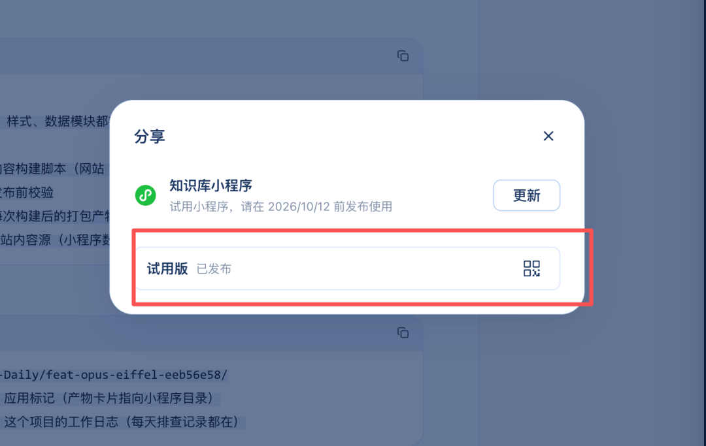

放假回来第一天，
咱就是说虽然已经2026年下半年了，
AI 在写代码这条赛道上已经犹如鬼见愁一般，但我确确实实还没试过做小程序。哪怕只是一个简单到再也不能简单的自用小工具，我都还没做过。
主要是一直觉得写小程序这件事儿，它不太像网页或者普通的应用，它本身活在微信自有的生态里，然后又有一堆制约，想想就会觉得很繁琐。
但是这两天看到WorkBuddy 上线了小程序相关的能力，感觉还是有点子说法的。
换句话说，也就是现在可以只用WorkBuddy 就完成小程序的开发、预览、和发布。而且如果你的小程序涉及到云服务的一些东西，比如登录、数据存储、文件等等，WorkBuddy都自动帮你接入。
既然腾讯都帮我把事儿给办到这儿了，我好像再也找不到理由不在小程序开发这件事儿上整点儿什么东西了。
正好我最近一直有个想法。
需求其实很简单，就是一个像备忘录一样的工具，但是和备忘录纯打字不同，它要能让我语音输入，这都2026年了，打字多落后是不是。然后还要能自动帮我把我每天叽里呱啦说的内容分类好，方便我日后回看。
OKK，那我们正式开始操作。
把WorkBuddy 升级到最新版本之后，我们除了把这个想法直接跟它说之外，记得在开始之前选择代码开发模式里有一个专门的小程序模式。

这样把任务丢给WorkBuddy 之后，它就会自动启动小程序相关的开发。
整个小工具没什么UI上的特别需求，主要是有两个需要AI接入的地方。
一个是ASR 语音转文字的时候，还有一个是对我语音输入的内容分类的时候。
ASR 模型我直接用的就是腾讯自家的wand-asr-v1 ，然后文本分类模型是GLM-5.3-Flash。
这个文本分类模型是WorkBuddy自己帮我选择的。
这里有个对非技术同学十分友好的点，也是我在使用过程中才发现的，
WorkBuddy 在给生成小程序相关的配置的时候会自带一个模型目录 。
如果你想要的小程序需要用到什么AI能力的话，就省得自己去看具体是怎么配置的，WorkBuddy 会自动帮你把模型接好。

当然这个其实只是比较意外的小惊喜，但最核心的还是WorkBuddy 把整个流程都做的更加丝滑了。
它在完成小程序的开发需求之后，会交付一个卡片。

点击这个卡片之后，WorkBuddy 右侧就会展开一个面板，这个面板包含了开发的小程序预览状态还有云服务相关的面板，比如数据库啥的。

但我的需求里其实没写的很清楚，哪些内容是需要存入数据库的，所以 WorkBuddy 会在执行任务的时候，会直接询问我的意见 ：

然后我也可以直接在WorkBuddy 里查看数据库里的情况。

可以看到这里我记录的两条内容已经同步进入数据库了。
而用WorkBuddy 开发小程序还有一个好处是， 它支持多种发布形式。
如果你本身就是小程序开发者的账号，直接扫码绑定账号就行。它能支持体验版和正式版的直接发布。

如果你和我一样，可能只是想先试试， 那它也支持创建试用版小程序。

总之，它把多种情况都会帮你考虑到，非常方便。
OKK，那最后直接来给大家展示一手我这个两三就轮做完的口喷记事本小程序版本。
视频 · 01
虽然肯定还有一些细节上还值得推敲，但是核心功能直接在WorkBuddy里聊着聊着直接做出来了，还是非常惊喜的。而且对应的内容落入数据库等等，这些相应的功能，也一个都没少。
最后在写点什么吧，
这次在 WorkBuddy 里做完这个语音记事本，我最开心的倒还真不是自己终于做出了一个小程序，反而是整个制作过程中的丝滑感。
原本想想就觉得繁琐的那些环节，像数据怎么存、AI 模型怎么接、做完之后怎么在手机上打开用，WorkBuddy 都帮我串起来了。
我只需要把需求说清楚，遇到需要选择的地方做个决定，再看看做出来的东西用着顺不顺手。
这让给自己做个工具这件事，终于变成了一个我愿意马上动手的选择。
毕竟，很多需求都很私人。
就像我这个口喷记事本，也没想着要有多少人用，能把我每天叽里呱啦冒出来的想法收藏起来，整理好，让我以后找得到，就已经很有用了。
以前碰到这种小需求，总会先去搜有没有现成的产品。找不到合适的，也就凑合着用，或者干脆算了。但现在，真的多了一个选择：照着自己的习惯，做一个。
那些只有自己才在意的小麻烦、觉得不值得专门找人开发的小需求，也终于随着WorkBuddy 和微信小程序的打通，有机会被认真解决了。
以上，
若觉得内容有帮助，欢迎点赞、推荐、关注。别错过更新，给公众号加个星标⭐️吧！祝您在2026年里天天开心，快乐，身体健康，万事如意！期待与您的下次相遇～